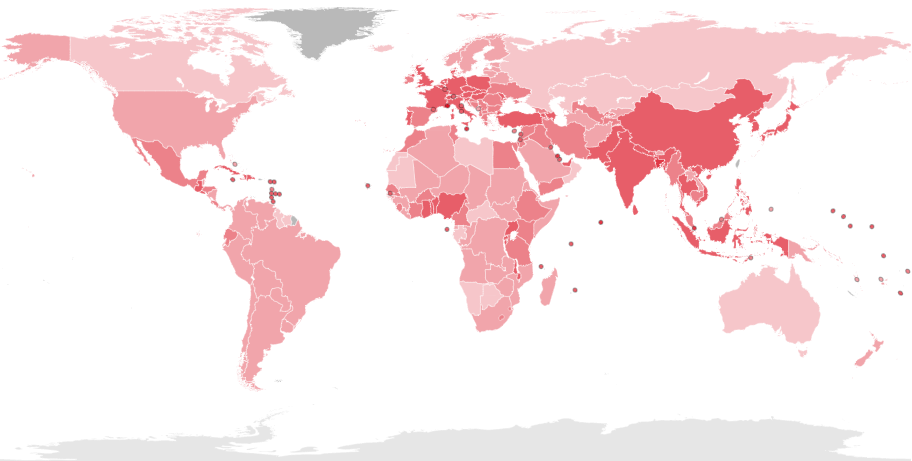

Geografia - poznámky
Obyvateľstvo sveta
- V súčasnosti žije na svete 8,3 miliárd ľudí – najvyšší počet obyvateľov v dejinách
Faktory, ktoré ovplyvňujú počet obyv. na Zemi
- Vojny, epidémie, zdravotná starostlivosť, vyspelosť štátov
Rozmiestnenie obyvateľstva
- Nerovnomerné
- Priemerná hustota obyvateľstva na Zemi je 52 obyv/km2
- Husto osídlené: mierne podnebné pásmo, oblasť okolo pobrežia, nížiny, miesta s úrodnou poľnohospodárskou pôdou, vodou a miestach ťažby nerastných surovín
- Riedko osídlené: púšte, polopúšte, vysoké pohoria, studené oblasti

75% obyv. v Eurázii
11% v Afrike
8% v Južnej Amerike
5% Sev. Amerike
1% Austrália a Oceánia
RASOVÁ ŠTRUKTÚRA
- Hlavné znaky – farba pokožky, črty tváre, stavba tela, farba a tvar vlasov
- Geneticko – populačné znaky
Afrika ako celok
- Afrika je 3. najrozsiahlejší svetadiel po Amerike a Ázií
- rozkladá sa okolo rovníka
- prechádzajú cez ňu obidva obratníky
Podnebné pásma Afriky
Tropické rovníkové pásmo
- pri rovníku v okolí Guinejského zálivu
- teplo a vlhko (každý deň prší)
- malé teplotné rozdiely medzi dňom a nocou
Tropické vlhké podnebie s obdobiami sucha
- stredná časť Afriky a väčšinu Madadgaskaru
- striedanie obdobia dažďov (v lete) a sucha (v zime)
Tropické suché podnebie
v oblasti obratníkov
horúco a sucho
veľké teplotné rozdiely medzi dňom a nocou
Subtropické podnebie
na severnom a južnom okraji Afriky
teplé letá, mierne zimy
SPÄŤ